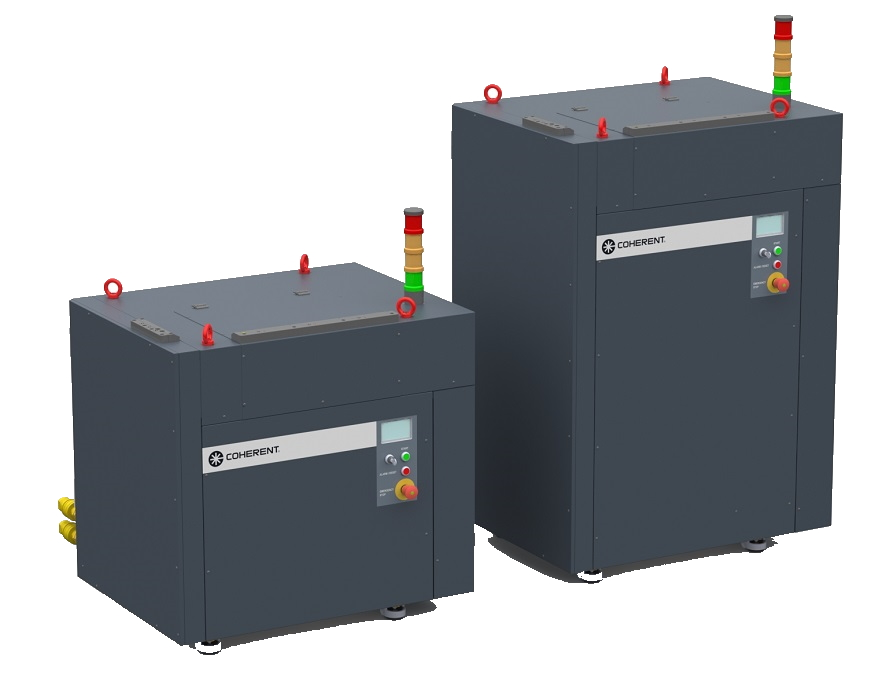
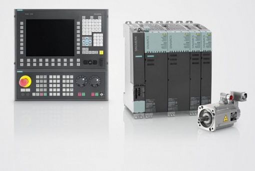
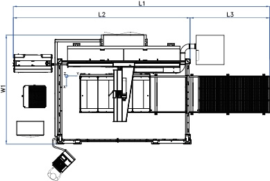

Для высокоточной резки листовых заготовок, труб, профилей, а также объемных деталей.
Установка лазерной резки Balliu серии BA

BA — это трехосевой лазерный режущий центр, предназначенный для скоростной контурной резки. Станок может оснащаться как проверенным газовым (СО2), так и новейшим твердотельным (fiber) источником различной мощности. Станина состоит из жестких термостабилизированных сварных труб и толстолистовых пластин. Она тяжелая и прочная, что гарантирует идеальную долговременную точность позиционирования.
Конструкция станка имеет ряд преимуществ: превосходная фронтальная доступность для оператора; масса движущихся частей (режущий портал и режущая головка) полностью постоянна, благодаря чему на итоговую точность машины не влияет вес обрабатываемого материала. Использование автоматической системы смены столов позволяет осуществлять загрузку заготовок или выгрузку деталей во время непрерывной лазерной резки, что приводит к значительно более высокой производительности.

Промышленный лазерный источник
Комплекс BA штатно оснащается лазером премиум-класса Rofin-Sinar. Особенности и технологические преимущества излучателя:
- Отличные параметры и стабильность луча на всей рабочей площади.
- Постоянный BPP во всем рабочем диапазоне мощности.
- Полное отсутствие расфокусировки на всей рабочей поверхности стола.
- Необслуживаемая, экономичная и долговечная эксплуатация.
- Очень компактный корпус, простой в интеграции и установке.
- Расчетное время жизни диодных модулей накачки составляет > 50 000 часов.
- Отсутствие сложного и капризного открытого канала хода луча.
Твердотельные волоконные лазеры ROFIN SINAR высокой мощности являются результатом слияния двух самых инновационных и передовых технологий в лазерном мире — активных оптических волокон и полупроводниковых диодов. Активные волокна пропускают чрезвычайно яркий свет из очень маленького конуса, что делает возможным получение мощности класса >кВт с превосходным качеством луча. Использование чрезвычайно ярких полупроводниковых одиночных эмиттерных диодов для накачки позволяет значительно увеличить срок службы системы по сравнению с устаревшими системами с ламповой или диодно-линейной / стековой накачкой. Комбинация обеих технологий приводит к созданию уникальной, высоконадежной и эффективной лазерной системы с параметрами, превосходящими традиционные дисковые, стержневые или газовые CO2 лазеры.

Прецизионные приводы осей
Все рабочие координатные оси станка вращаются и приводятся в движение оригинальными цифровыми сервоприводами переменного тока Siemens. Приводные двигатели установлены по специальной жесткой схеме: при изменении направления движения вдоль оси полностью сводится к минимуму любой механический зазор (люфт).
Контроль положения вдоль оси осуществляется в замкнутом контуре через интеллектуальную систему числового программного управления ЧПУ, подключенную к линейной оптической измерительной системе, и имеет разрешение 0,5 микрона. Все измерительные датчики являются абсолютными: нет необходимости в долгой процедуре выхода в референсные (нулевые) точки после каждого включения или загрузки системы.

Технические характеристики
| Параметр лазерного комплекса | Значение |
|---|---|
| Максимальная скорость перемещения по осям | 140 м/мин |
| Ускорение портала | 12 м/с² |
| Дискретность (разрешение) оптических датчиков | 0,5 мкм |
| Тип измерительной системы | Абсолютные оптические линейки |
| Производитель электроники и ЧПУ | Siemens |
Консультация по лазерным станкам
Нажмите на кнопку ниже, чтобы мгновенно перейти в чат мессенджера WhatsApp. Вы сможете напрямую обсудить ваши производственные задачи, прислать чертежи деталей для тестового раскроя или оперативно рассчитать необходимую мощность лазерного источника.